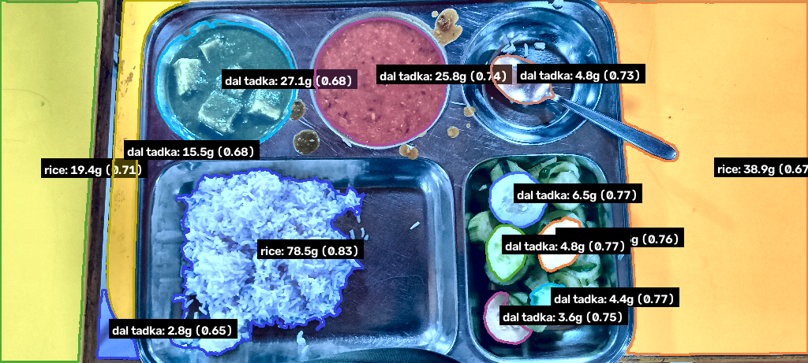

{
"resolution": "4080x1840",
"channels": 3,
"dtype": "uint8",
"expected_items": [
"rice",
"dal tadka"
],
"plate_profile": null,
"debug": false
}
{
"food_items": [
{
"name": "rice",
"volume_ml": 36.7,
"mass_g": 38.9,
"calories": 50.6,
"protein": 1.1,
"carbs": 10.9,
"fat": 0.1,
"confidence": 0.6709,
"class_label": "rice",
"class_confidence": 0.2928,
"top_k": [
{
"label": "rice",
"confidence": 0.543,
"raw_similarity": -0.0035
},
{
"label": "dal tadka",
"confidence": 0.457,
"raw_similarity": -0.0186
}
],
"identification_status": "uncertain",
"menu_match": false,
"matched_menu_item": null,
"identification_confidence": 0.2928,
"segmentation_confidence": 0.9883,
"association_confidence": 0.0,
"menu_match_confidence": 0.0,
"depth_confidence": 1.0,
"scale_confidence": 0.7
},
{
"name": "rice",
"volume_ml": 18.7,
"mass_g": 19.4,
"calories": 25.2,
"protein": 0.5,
"carbs": 5.4,
"fat": 0.1,
"confidence": 0.71,
"class_label": "rice",
"class_confidence": 0.3679,
"top_k": [
{
"label": "rice",
"confidence": 0.5818,
"raw_similarity": 0.0197
},
{
"label": "dal tadka",
"confidence": 0.4182,
"raw_similarity": -0.0105
}
],
"identification_status": "uncertain",
"menu_match": false,
"matched_menu_item": null,
"identification_confidence": 0.3679,
"segmentation_confidence": 0.9865,
"association_confidence": 0.0,
"menu_match_confidence": 0.0,
"depth_confidence": 1.0,
"scale_confidence": 0.7
},
{
"name": "rice",
"volume_ml": 74.5,
"mass_g": 78.5,
"calories": 102.0,
"protein": 2.1,
"carbs": 22.0,
"fat": 0.2,
"confidence": 0.8308,
"class_label": "rice",
"class_confidence": 0.7345,
"top_k": [
{
"label": "ric[
{
"step": "Input",
"message": "Original image saved",
"params": {
"resolution": "4080x1840"
},
"elapsed_s": 0.3878,
"input_file": null,
"output_file": "original.png",
"timestamp": "2026-11-01T17:21:01.837078"
},
{
"step": "Pipeline",
"message": "Step 1 — Preprocessing & Perspective Warp",
"params": {},
"elapsed_s": null,
"input_file": null,
"output_file": null,
"timestamp": "2026-11-01T17:21:01.837147"
},
{
"step": "Quality Gate",
"message": "PASS",
"params": {
"blur_score": 111.85,
"tilt_deg": 3.0
},
"elapsed_s": null,
"input_file": null,
"output_file": null,
"timestamp": "2026-11-01T17:21:02.023175"
},
{
"step": "Preprocessing",
"message": "Complete",
"params": {
"output_size": "1024x461"
},
"elapsed_s": 0.2105,
"input_file": null,
"output_file": null,
"timestamp": "2026-11-01T17:21:02.047755"
},
{
"step": "Pipeline",
"message": "Step 2 — Compartments & Scale",
"params": {},
"elapsed_s": null,
"input_file": null,
"output_file": null,
"timestamp": "2026-11-01T17:21:02.048024"
},
{
"step": "Scale Calibration",
"message": "Fallback to bbox-based calibration",
"params": {
"cm_per_pixel": 0.04469,
"method": "bbox"
},
"elapsed_s": null,
"input_file": null,
"output_file": null,
"timestamp": "2026-11-01T17:21:02.058475"
},
{
"step": "Compartment Detection",
"message": "Scale computed",
"params": {
"cm_per_pixel": 0.04469,
"pixel_area_cm2": 0.00199746,
"compartments": 0,
"scale_confidence": 0.7
},
"elapsed_s": 0.0085,
"input_file": null,
"output_file": null,
"timestamp": "2026-11-01T17:21:02.058655"
},
{
"step": "Pipeline",
"message": "Step 3 — Depth Estimation",
"params": {},
"elapsed_s": null,
"input_file": null,
"output_file": null,
"| Step | Message | Params | Time |
|---|---|---|---|
| Input | Original image saved | {"resolution": "4080x1840"} | 0.3878s |
| Pipeline | Step 1 — Preprocessing & Perspective Warp | — | — |
| Quality Gate | PASS | {"blur_score": 111.85, "tilt_deg": 3.0} | — |
| Preprocessing | Complete | {"output_size": "1024x461"} | 0.2105s |
| Pipeline | Step 2 — Compartments & Scale | — | — |
| Scale Calibration | Fallback to bbox-based calibration | {"cm_per_pixel": 0.04469, "method": "bbox"} | — |
| Compartment Detection | Scale computed | {"cm_per_pixel": 0.04469, "pixel_area_cm2": 0.00199746, "compartments": 0, "scale_confidence": 0.7} | 0.0085s |
| Pipeline | Step 3 — Depth Estimation | — | — |
| Depth Estimation | Complete | — | 1.3597s |
| Pipeline | Step 4 — Segmentation | — | — |
| Segmentation | 13 food items found | — | 74.0785s |
| Pipeline | Step 5 — Food Classification (OCR-constrained) | — | — |
| Classification | Complete | {"n_items": 13, "ocr_labels_used": true} | 5.8049s |
| Pipeline | Step 6 — Hungarian Label Assignment | — | — |
| Pipeline | Step 7 — Volume & Mass Estimation | — | — |
| Volume Estimation | Computed mass for 13 items | {"total_items": 13} | 0.0288s |
| Pipeline | ✅ Pipeline complete | {"total_food_items": 13, "avg_confidence": 0.7318, "scale_method": "bbox"} | 82.0046s |